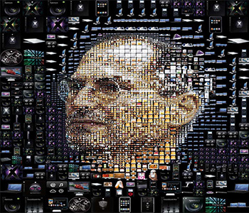

网站首页
马克思简介
新媒体简介
传统文化
新时代青年
做法
您是否一直被以下问题困扰？
内容质量与真实性
隐私和安全
信息过载
社交媒体上的滥用问题
版权和知识产权
商业可行性
No
strength
可行性
No
order
实施
No
channel
渠道
以下是对新媒体
优势的介绍
在传播方面
广泛传播和覆盖面
新媒体平台能够实现信息的广泛传播，不受地理限制。通过社交媒体、在线新闻、博客等渠道，信息可以在全球范围内传播，使信息传播更加高效和广泛。

在灵活性方面
互动与参与
新媒体促进了用户与内容的互动和参与。用户可以通过评论、分享、点赞等方式与内容互动，也可以创造自己的内容并分享。这增加了用户参与感，使媒体更具吸引力。
在用户体验方面
实时性和定制化
新媒体能够提供即时信息，用户可以随时获取最新的新闻和资讯。此外，新媒体平台还能够根据用户的兴趣和行为提供定制化的内容推荐，提高了用户体验。
新媒体与旧媒体的
区别是什么
新媒体
不受地理限制，信息可以全球传播，无论时间和地点
能够提供即时信息，用户可以随时获取最新的新闻和资讯
强调用户互动和参与，用户可以评论、分享、点赞、发布内容，与媒体创作者互动更为密切
地理和时空限制
实时性和即时性
互动性和参与度
旧媒体
受到地理和时空限制，需要印刷和分发物理媒体，如报纸和杂志
在信息传播上通常不如新媒体及时，需要等待定期出版或广播
通常是单向的信息传递，观众的参与度有限
新媒体视阈下促进高校大学生思想文化建设的跨界网站设计研究
地址：沈阳工程学院
制作团队：孙连有 李春霖